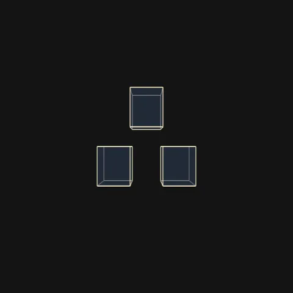
Reutersvärd 3D
Triângulo impossível em WebGL, gire nos eixos X, Y e Z
Impossible triangle in WebGL, rotate on X, Y and Z
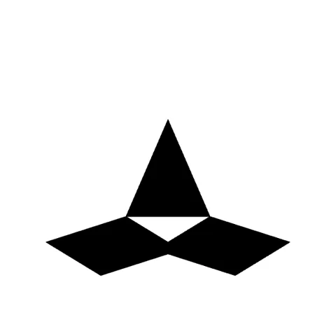
Reutersvärd, luz e rotação
Ilusão 3D com controle da rotação e da posição da luz
3D illusion with rotation and light-position controls
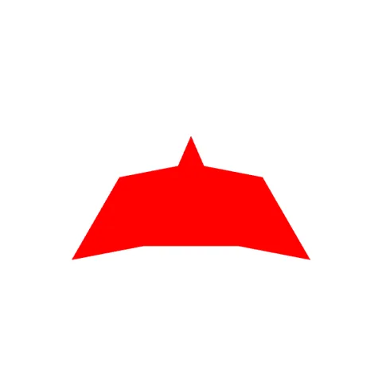
Reutersvärd interativo
Ajuste ângulo e tamanho com controles deslizantes
Adjust angle and size with sliders
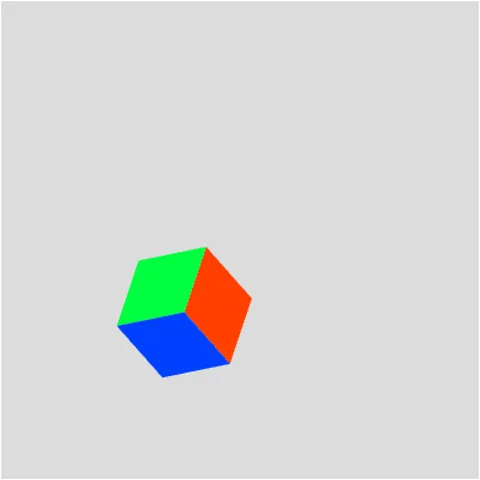
Reutersvärd em movimento
O triângulo girando em loop
The triangle spinning in a loop
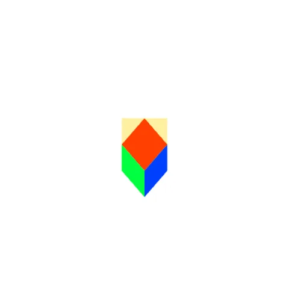
Ilusão de Reutersvärd
A figura impossível, estática
The impossible figure, still
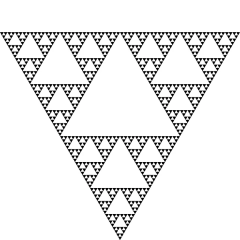
Triângulo de Sierpinski
Fractal gerado por recursão
Fractal generated by recursion
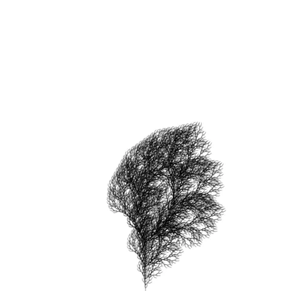
Árvore fractal
L-System: cada clique em "Gerar" faz a árvore crescer
L-System: each click on "Generate" grows the tree
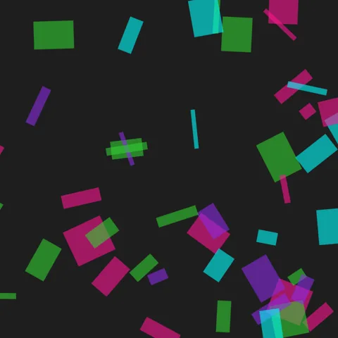
Neon Convergence
Formas neon que seguem o mouse
Neon shapes that follow your mouse
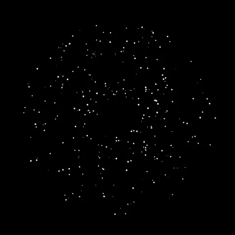
Galáxia com zoom
Estrelas girando em volta de um centro, com zoom no controle deslizante
Stars spinning around a center, with a zoom slider
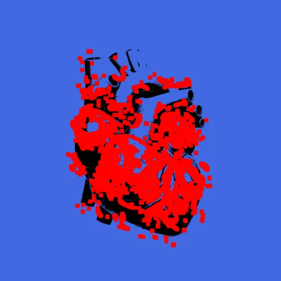
Coração de partículas
Coração anatômico pulsando enquanto partículas vermelhas se soltam dele em 3D
Anatomical heart pulsing while red particles drift off it in 3D
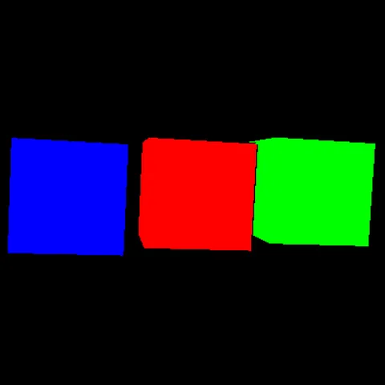
Cubos em Three.js
Três cubos coloridos girando, se separando e voltando a se juntar
Three colored cubes spinning, drifting apart and coming back together
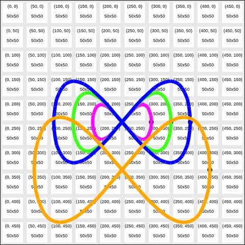
Grid art
Desenhe com pincel neon sobre uma grade com coordenadas
Draw with a neon brush over a grid with coordinates
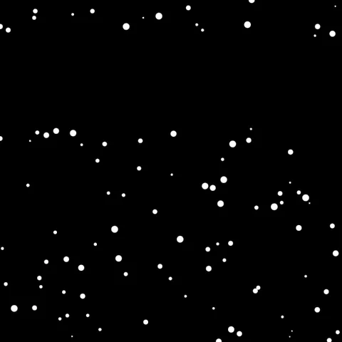
Estudos de Canvas
Camadas, rotação e uma chuva de partículas que muda de cor
Layers, rotation and a particle rain that changes color